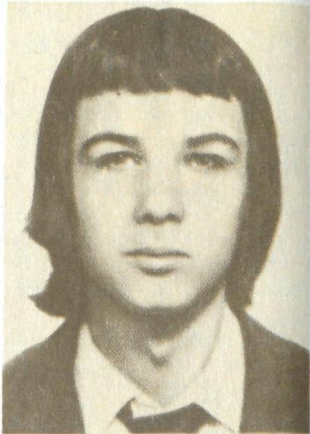

01
Юность
Учился в школе №14, занимался спортом, ходил в походы, любил природу, рыбалку и технику.
Владимирович
Бобруйский парень, который любил спорт, технику, музыку и небо. Ему было всего девятнадцать, когда его жизнь оборвалась в Афганистане.

Имя, которое
не забывают.
Иногда вся судьба помещается в девятнадцать лет.
Но память о человеке живёт гораздо дольше.
Школа, спорт, музыка, любимая работа и мечта о небе — таким его запомнили близкие.
Учился в школе №14, занимался спортом, ходил в походы, любил природу, рыбалку и технику.
Занимался парашютным спортом в Бобруйском аэроклубе имени Слепнева.
Его имя хранят школа №28, боевые товарищи и жители Бобруйска.
Нажмите на год — карточка расскажет об этом этапе.
1 апреля в Бобруйске родился Владимир Владимирович Потапович.
Архивные снимки и память, которую бережно хранят в Бобруйске.
Учащиеся школы №28 ухаживают за могилой Владимира. Пионерская дружина школы носит его имя.